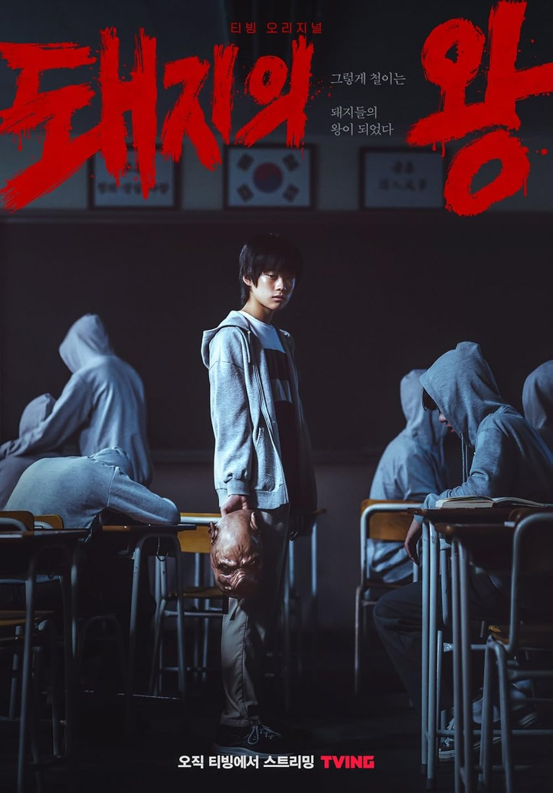
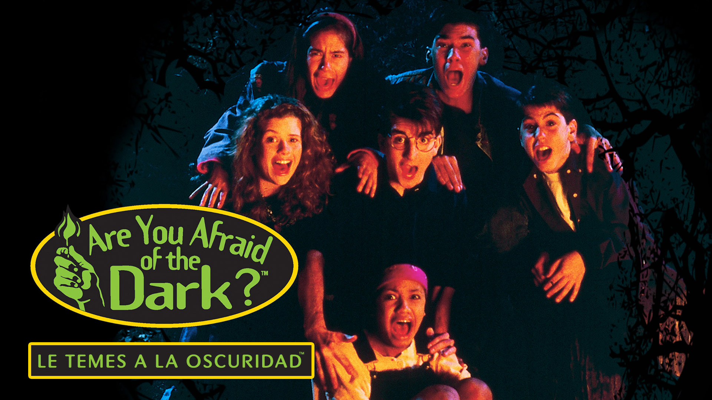
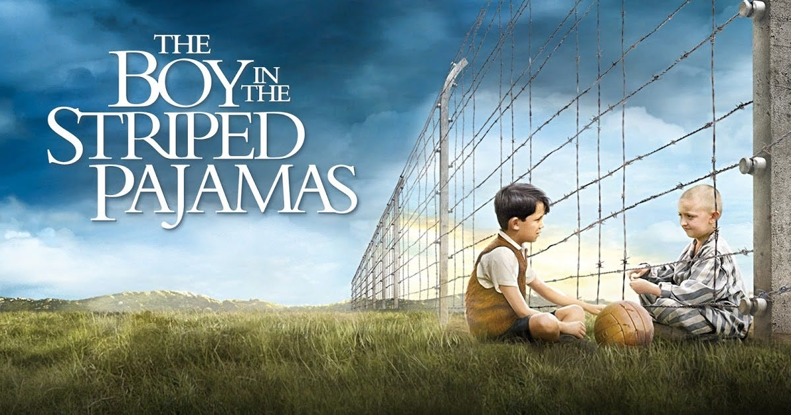

4. Ver videos, series y películas
Me gusta mucho ver videos de viajes o podcasts, series y películas coreanas, animes o de acción y suspenso.
Tipo de contenido que me gusta ver
Mi top Youtubers
- Tano Villar
- Clase libre
- Fabian Glez
- Infonimados
Géneros que más me gustan
Series que recomiendo
- The king of pigs
- Es una serie coreana que trata temas como el acoso escolar y cómo las heridas del pasado pueden marcarte para siempre. La historia sigue a dos adultos que se reencuentran después de muchos años y revive lo que vivieron en su infancia. Es oscura, intensa y te mantiene tenso todo el tiempo. Si te gustan los thrillers psicológicos que te dejan pensando, esta vale muchísimo la pena.

- Le temes a la oscuridad
- Esta es una serie noventera. Cada episodio cuenta una historia diferente de terror, narrada por un grupo de adolescentes alrededor de una fogata. No da miedo extremo, pero sí tiene ese suspenso que te atrapa y una vibra muy nostálgica. Es perfecta si te gusta el terror ligero, las historias cortas y ese ambiente misterioso que te engancha sin ser demasiado pesado.

Películas que recomiendo
- El código enigma
- Es una película que te atrapa si te gustan las historias basadas en hechos reales. Sigue a Alan Turing, un genio matemático que tuvo un papel clave durante la Segunda Guerra Mundial al intentar descifrar los mensajes secretos de los nazis. No solo va de números y códigos, también muestra el lado humano: la presión, el trabajo en equipo y las injusticias que vivió. Es interesante, intensa y te deja pensando en lo poco que se reconocen algunas historias.

- El niño con el pijama de rayas
- Esta es de esas películas que se te quedan en la cabeza. La historia se cuenta desde la perspectiva de un niño, lo que la hace aún más impactante. La amistad que surge entre dos niños separados por una cerca muestra de forma muy cruda, pero a la vez inocente, lo terrible de la guerra y el odio. Es triste, sí, pero muy necesaria; te hace reflexionar bastante.
